Âtrebois
Âtrebois est une petite planète recouverte d'une immense forêt. Sa surface est principalement composée de vastes étendues boisées, de falaises et de petites zones rocheuses qui entourent les différents villages et installations.
La planète possède une atmosphère respirable et une gravité relativement faible. Son environnement est calme et accueillant, avec une végétation dense qui recouvre une grande partie de sa surface.
Les arbres d'Âtrebois sont particulièrement imposants. Certains atteignent plusieurs dizaines de mètres de hauteur et forment de véritables forêts à travers lesquelles il est possible de se déplacer.
La surface de la planète est également parcourue par de nombreux cours d'eau et de petits reliefs. Au-dessus des forêts, la planète est entourée d'un ciel sombre où l'on peut observer les autres astres du système solaire.
Âtrebois est finalement une planète relativement paisible, dont le paysage contraste fortement avec les environnements extrêmes des autres astres du système. Sa forêt constitue l'élément principal de son identité et recouvre presque entièrement sa surface.